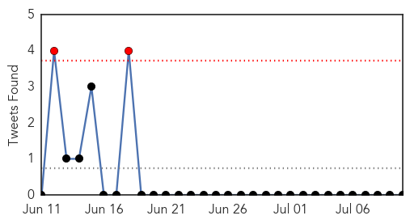
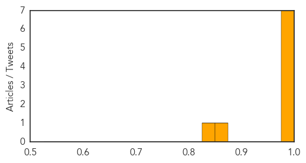

Cholera
30-Day Web Trend
0 alerts, 0 warnings

30-Day Twitter Trend
3 alerts, 0 warnings

Article Locations

Article Confidences

Top Articles:
- 0.997
- Oral Cholera Vaccine Shows Promise, Reduces Cases by Almost 40%, study
- 0.994
- New cholera vaccine trialed in Bangladesh slum cut cases by nearly 40 per cent
- 0.992
- The most from the coast
- 0.990
- South Sudan Red Cross mobilizes volunteers to combat cholera in Juba
- 0.983
- Inexpensive drug may end cholera epidemics
- 0.973
- We now have a cheap and effective cholera vaccine
- 0.754
- Patients die as S.Sudan fighting forces medics to flee: Red Cross
- 0.703
- Attention People Who Eat Dog Meat! Here are 3 Major Health Concerns You Should Know About
- 0.696
- Why can’t we stop cholera in Haiti?
- 0.536
- UN has promises to keep in Haiti
Top Tweets:
- 0.592
- RT: UNdermining UN impunity in Haiti for cholera: UN *is* paying compensation in Mali, ICP confirmed: http://t.co/wOzExe…
- 0.588
- New study published in Lancet further supports that oral cholera vaccine prevents cholera and saves lives! http:///bit.ly/1G8ww4a
MERS
30-Day Web Trend
0 alerts, 3 warnings

30-Day Twitter Trend
0 alerts, 0 warnings

Article Locations

Article Confidences
Top Articles:
- 0.997
- (LEAD) S. Korea reports no new cases of MERS for 5 straight days
- 0.995
- Foreigner from ME now free from MERS-CoV
- 0.995
- Philstar Mobile
- 0.989
- News Scan for Jul 10, 2015
- 0.986
- No more active MERS case in PH - DOH
- 0.986
- MERS patient in Philippines recovers
- 0.975
- (MERS virus) Philippines puts 112 under surveillance
- 0.860
- 112 people monitored for MERS in Philippines
- 0.849
- 112 people monitored for MERS in Philippines - Xinhua
Top Tweets:
-
No tweets found for Jul 10, 2015